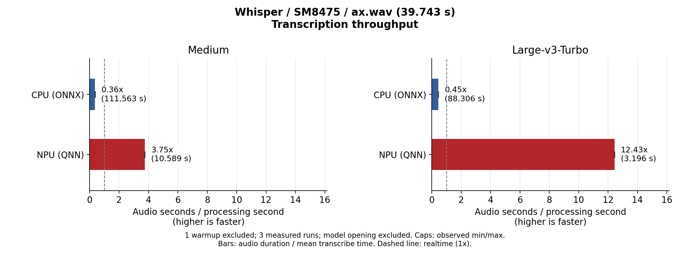
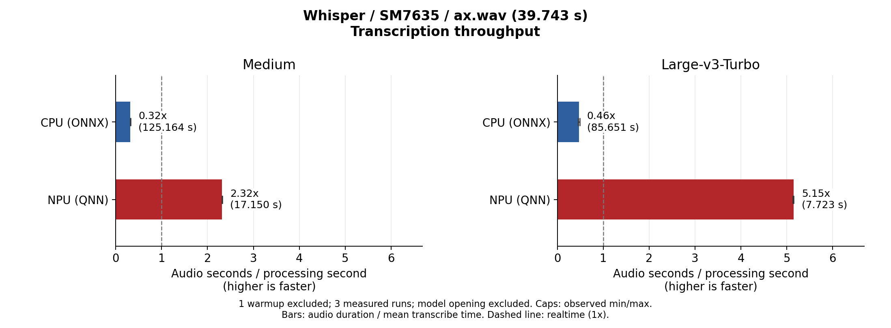
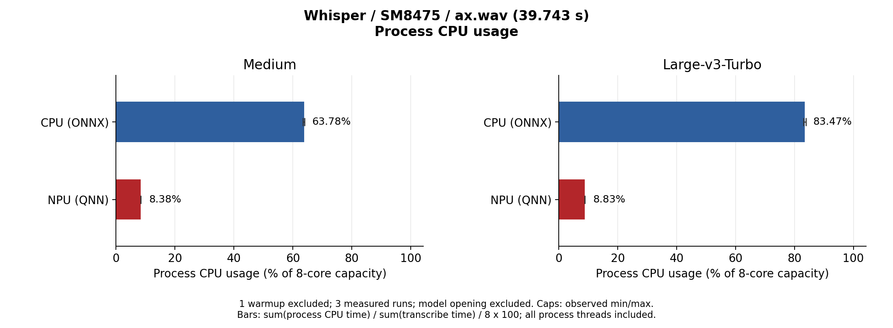
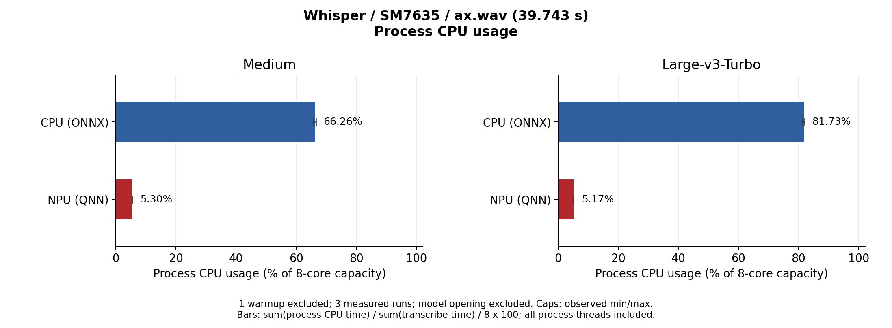
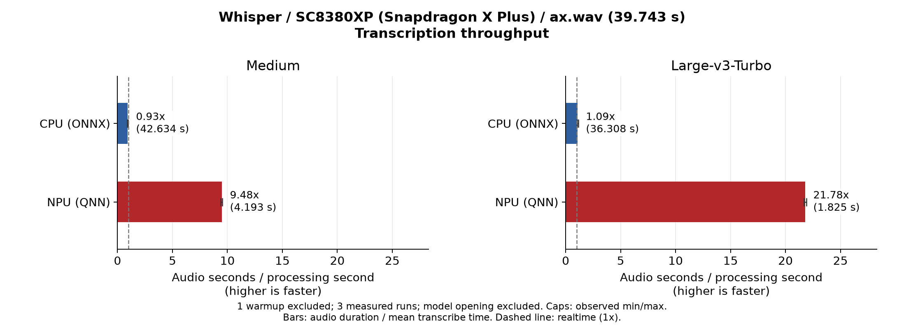
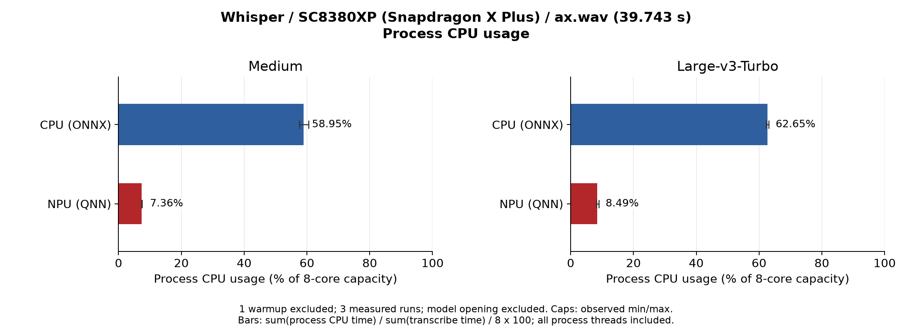
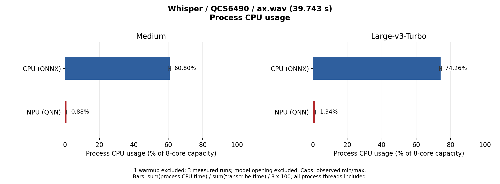

Measurement results of running Whisper on the NPU of Qualcomm SoCs with the QNN backend of ailia Speech.
For how to use the QNN backend, see the ailia Speech NPU (QNN) Guide.
Whisper Medium and Large V3 Turbo were measured on two devices: Snapdragon 8+ Gen 1 (SM8475 / Hexagon v69) and Snapdragon 7s Gen 3 (SM7635 / Hexagon v73). The NPU uses INT16 QNN Models built for each SoC. The CPU results run the original ONNX models through the ailia SDK CPU path on the same device. Both use the same runtime.
ailiaSpeechTranscribe calls.| Device | Model | Path | Time (mean) | Realtime factor | NPU speedup |
|---|---|---|---|---|---|
| SM8475 (Hexagon v69) | Medium | CPU (ONNX) | 111.563 s | 0.36x | 10.54x faster |
| NPU (QNN) | 10.589 s | 3.75x | |||
| SM8475 (Hexagon v69) | Large V3 Turbo | CPU (ONNX) | 88.306 s | 0.45x | 27.63x faster |
| NPU (QNN) | 3.196 s | 12.43x | |||
| SM7635 (Hexagon v73) | Medium | CPU (ONNX) | 125.164 s | 0.32x | 7.30x faster |
| NPU (QNN) | 17.150 s | 2.32x | |||
| SM7635 (Hexagon v73) | Large V3 Turbo | CPU (ONNX) | 85.651 s | 0.46x | 11.09x faster |
| NPU (QNN) | 7.723 s | 5.15x |
audio duration / mean processing time; above 1x means the audio is transcribed faster than its length.Compared with the CPU, the NPU is about 10.5x faster for Medium and 27.6x faster for Large V3 Turbo on SM8475, and about 7.3x for Medium and 11.1x for Large V3 Turbo on SM7635. With Large V3 Turbo on the NPU, 39.7 seconds of audio is transcribed in about 3.2 seconds on SM8475 and about 7.7 seconds on SM7635.


| Device | Model | CPU (ONNX) | NPU (QNN) |
|---|---|---|---|
| SM8475 (Hexagon v69) | Medium | 63.78% | 8.38% |
| SM8475 (Hexagon v69) | Large V3 Turbo | 83.47% | 8.83% |
| SM7635 (Hexagon v73) | Medium | 66.26% | 5.30% |
| SM7635 (Hexagon v73) | Large V3 Turbo | 81.73% | 5.17% |
total process CPU time / total processing time / 8 cores × 100, where 100% means all 8 cores are fully used.CPU usage on the NPU stays around 5–9%, leaving CPU headroom for the application. Running on the CPU uses 64–83%.


Measured on two Windows ARM64 devices using the same audio, procedure and aggregation as on Android. Snapdragon X Plus (SC8380XP / Hexagon v73, 8 cores) runs Windows 11 Pro, and QCS6490 (Hexagon v68, 8 cores) runs Windows 11 IoT Enterprise LTSC. The NPU uses INT16 QNN Models built for each SoC. The CPU results run the original ONNX models through the ailia SDK CPU path on the same device.
| Device | Model | Path | Time (mean) | Realtime factor | NPU speedup |
|---|---|---|---|---|---|
| SC8380XP (Hexagon v73) | Medium | CPU (ONNX) | 42.634 s | 0.93x | 10.17x faster |
| NPU (QNN) | 4.193 s | 9.48x | |||
| SC8380XP (Hexagon v73) | Large V3 Turbo | CPU (ONNX) | 36.308 s | 1.09x | 19.90x faster |
| NPU (QNN) | 1.825 s | 21.78x | |||
| QCS6490 (Hexagon v68) | Medium | CPU (ONNX) | 148.901 s | 0.27x | 10.96x faster |
| NPU (QNN) | 13.588 s | 2.92x | |||
| QCS6490 (Hexagon v68) | Large V3 Turbo | CPU (ONNX) | 101.509 s | 0.39x | 13.23x faster |
| NPU (QNN) | 7.672 s | 5.18x |
Compared with the CPU, the NPU is about 10.2x faster for Medium and 19.9x for Large V3 Turbo on SC8380XP, and about 11.0x for Medium and 13.2x for Large V3 Turbo on QCS6490. With Large V3 Turbo on the NPU, 39.7 seconds of audio is transcribed in about 1.8 seconds on SC8380XP and about 7.7 seconds on QCS6490.

| Device | Model | CPU (ONNX) | NPU (QNN) |
|---|---|---|---|
| SC8380XP (Hexagon v73) | Medium | 58.95% | 7.36% |
| SC8380XP (Hexagon v73) | Large V3 Turbo | 62.65% | 8.49% |
| QCS6490 (Hexagon v68) | Medium | 60.80% | 0.88% |
| QCS6490 (Hexagon v68) | Large V3 Turbo | 74.26% | 1.34% |
CPU usage on the NPU is around 7–9% on SC8380XP and around 1% on QCS6490. Running on the CPU uses 59–63% on SC8380XP and 61–75% on QCS6490.

